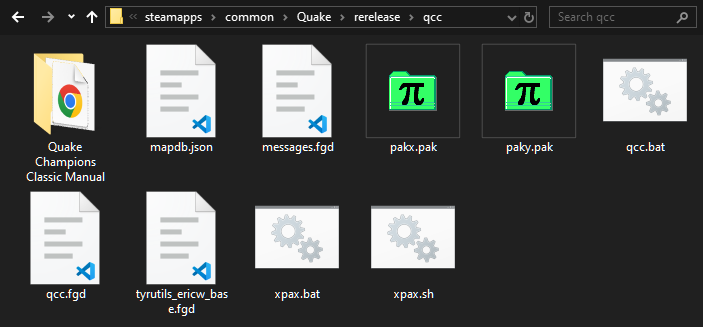
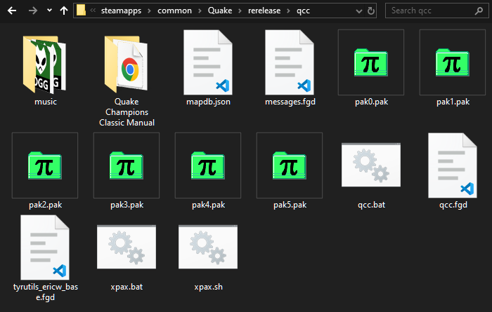

To play Quake Champions Classic, you will need to own a copy of Quake 1 and the official Mission Packs, Scourge of Armagon, Dissolution of Eternity, Dimension of the Past, and Dimension of the Machine.
The mod is designed with Nightdive Remaster compatibility in mind, but is also tested on the Ironwail source port. The mod should be mostly engine agnostic, as it is designed completely in Quake C with conditional checks in place for Remaster exclusive features.
For the 2021 Rerelease, extract the mod folder inside the ../Steam/steamapps/common/Quake/rerelease/ folder. For all other engines, follow their mod installation instructions (typically copy the mod folder to the Quake root folder).

Once extracted, run xpax.bat to automatically copy the data from the addons into the mod folder. For Linux users, xpax.sh is provided thanks to a community member contribution. The Mission Packs should be installed in their default locations (eg: Quake Install Path\hipnotic\). Once the batch file is run, the QCC folder should contain multiple pak files and a music folder.
If for some reason you are unable to run either the batch or shell script and must perform the setup manually, you'll need to rename pakx.pak to pak4.pak and paky.pak to pak5.pak, then copy and rename the following pak files:
| Origin | Rename |
| hipnotic/pak0.pak | pak0.pak |
| rogue/pak0.pak | pak1.pak |
| dopa/pak0.pak | pak2.pak |
| mg1/pak0.pak | pak3.pak |
Once the files are copied and renamed, your QCC folder should look like this:

If you were able to run the batch file or shell script, the music folder will have automatically copied and renamed all of the tracks. If you need to do this manually, the soundtrack order is Quake (id1), Scourge of Armagon (hipnotic), and Dissolution of Eternity (rogue).
It is highly recommended to bind the new impulses added with the mod. Please read the Impulses chapter to learn more.
Due to the way the mod is installed, it is not enough to just overwrite your old mod files with the new ones.
The easiest way to accomplish this is by deleting the contents of your qcc folder and doing a clean mod install. In the Remaster this can be done without issue, but other Quake engines may keep the mod's configuration and bindings in the mod folder. If you want to avoid having to reconfigure the mod after updating you'll want to perform a manual update.
To update the mod manually you'll want to not only overwrite the contents of the mod folder with the new files, but you will also need to delete the last numbered pak file in your mod folder (usually pak4.pak). Then you'll need to rename your new pakx.pak to the name of the pak file you just deleted.